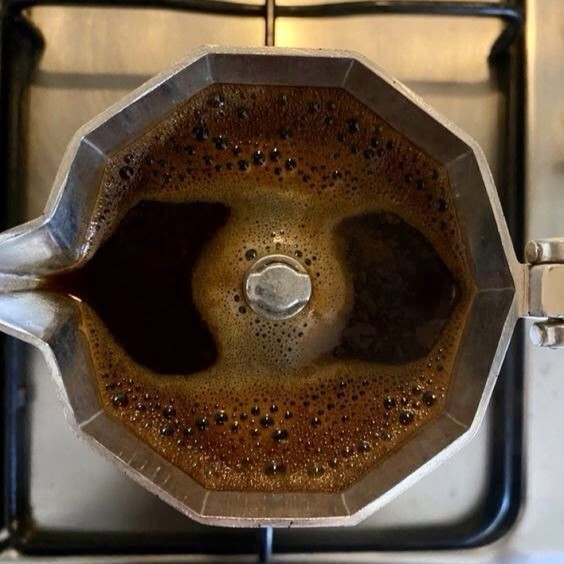

Meryem. I don't have a lot to say about myself. I tried, for several months, to put together something elaborate here, but I'm about as normal as the next person you'll meet. I don't have a unique backstory to tell around a bonfire, or a sob story to make you think I'm some sort of survivor; I simply am who I am and I like what I like.
With that being said, I've sewn together five sections that I think put me into perspective a bit better than what some long, dreadfully boring "about me" would.
